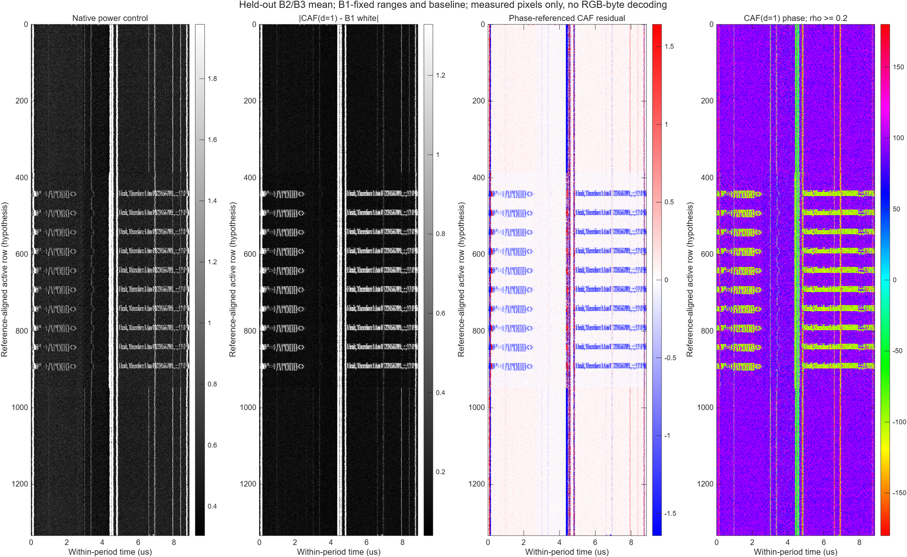
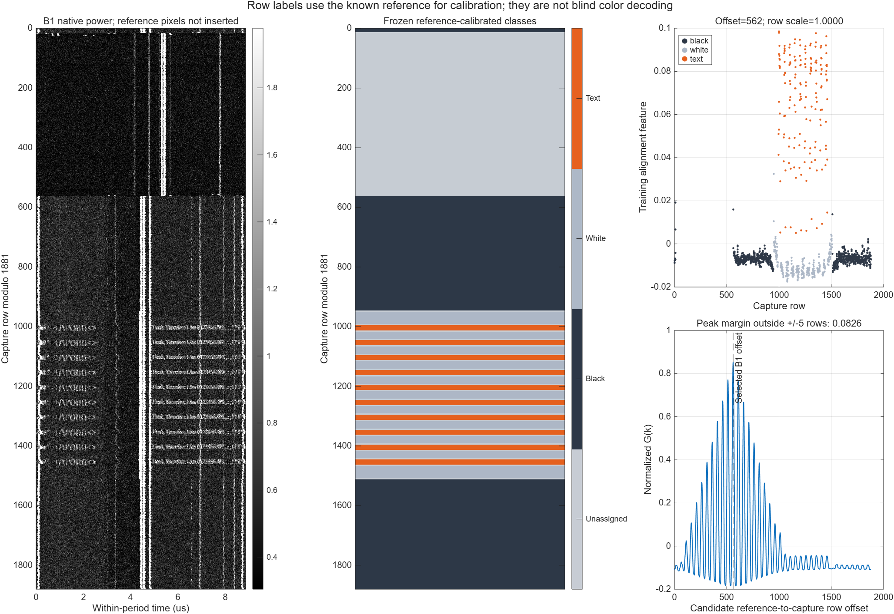
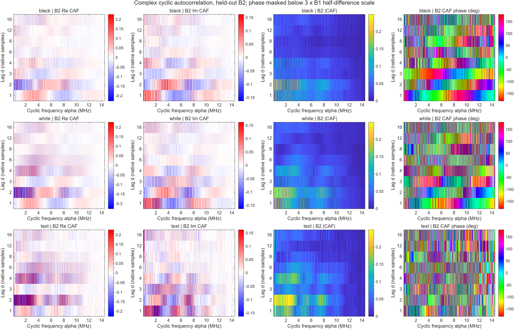
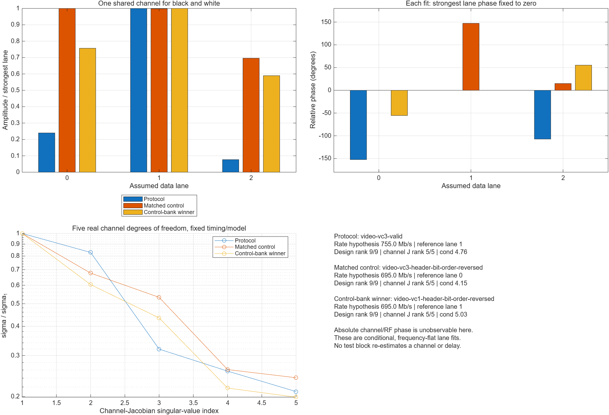
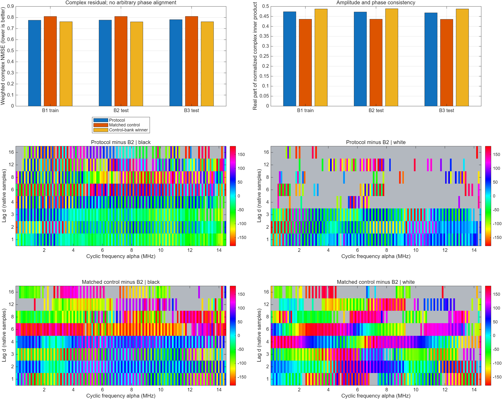
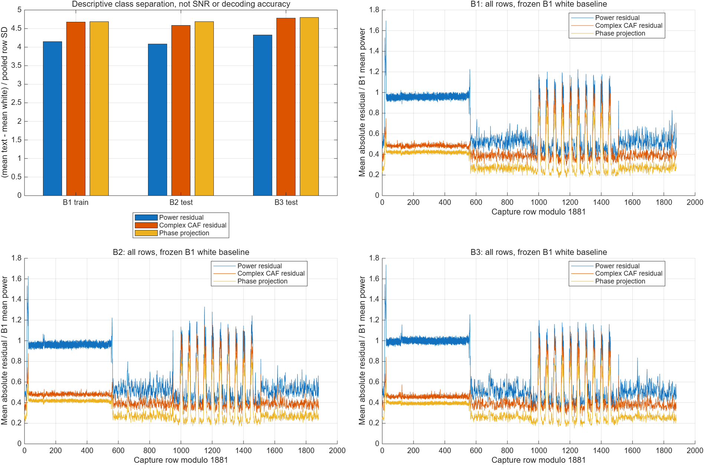
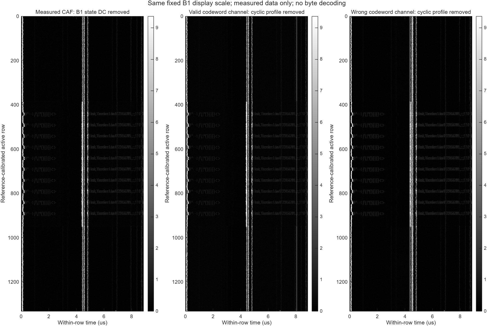
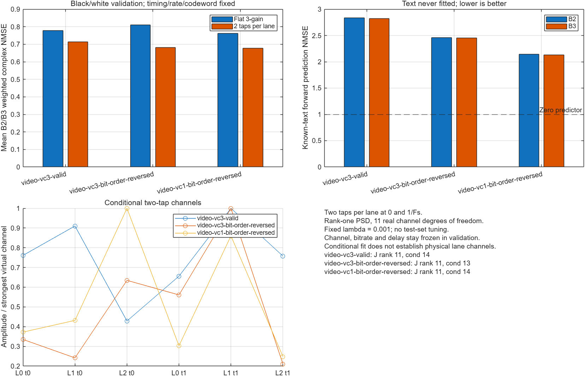

iPhone 6: 복소 CAF와 3 lane codebook 검증
100 MHz 녹음 · Fs 124.0828 MS/s · 2026-10-27 · MATLAB R2026b
실측 문자 행 분리는 개선. 프로토콜 codeword 식별은 미확정.검정·흰색 행에서 학습한 채널이 문자 행으로 일반화하지 않았으며, 잘못된 codeword도 경쟁력 있는 잔차를 보였다.
수식·설계·한계 전체 보고서 · 전체 후보 수치 CSV · 수치 검증 · IQ 방향 민감도
계산한 통계량
R_c^α(d) = Fourier_α { E[z[n+d] z*[n] | phase(n+d/2), row class c] }
α = k × 112802.5501974424 Hz, k = 1…128
d = 1, 2, 3, 4, 6, 8, 12, 16 samples (8.059…128.946 ns)
R_model,c^α(d) = Σ_l Σ_m h_l h_m* A_lm,c^α(d)
H = h hᴴ, rank(H)=1, H ⪰ 0
정수 lag를 원래 IQ에 적용했다. 중간 시각 위상에 따라 선형 누적한 조건부 평균을 Fourier 변환했다. 전력만으로 얻는 d=0과 달리 시간 간 복소 관계를 유지한다. 이번 실행은 CFO/clock 보정을 추가 적용하지 않았다.
B1(0.2 s 시작)만 학습. B2(1.1 s), B3(1.8 s)는 각 135.213 ms이며 채널·코드·지연·가중치를 고정한 검증이다. 복원에는 기준 화면 픽셀을 삽입하지 않았다.
실측 문자 / 흰 행 분리도
| 검증 구간 | 전력 잔차 | 복소 CAF 잔차 | 위상 기준 투영 |
|---|
| B2 | 4.0845 | 4.5858 | 4.6881 |
| B3 | 4.3275 | 4.7815 | 4.7995 |
양쪽 모두 B1 흰 행 baseline을 사용한 비교. 높은 값이 더 큰 분리를 뜻한다. 공간적으로 상관된 행을 이용한 기술적 지표이며 SNR 향상으로 해석하지 않는다.
2 tap 채널의 검증 오차
| 후보 | 검정·흰 행 B2 / B3 | 문자 행 B2 / B3 |
|---|
| video-vc3-valid | 0.7120 / 0.7144 | 2.8346 / 2.8223 |
| video-vc3-header-bit-order-reversed | 0.6834 / 0.6807 | 2.4595 / 2.4515 |
| video-vc1-header-bit-order-reversed | 0.6765 / 0.6770 | 2.1435 / 2.1326 |
복소 weighted NMSE, 낮을수록 좋다. 0을 예측하면 1이다. 모든 문자 행 예측이 1보다 크므로 문자 codeword를 복호했다고 할 수 없다. 최선 채널의 최적화 종료 조건은 충족했지만 전역 최적해를 보장하지 않는다.
실측 복원 · CAF · 위상
왼쪽부터 전력, B1 흰 행 CAF를 뺀 크기, 흰 행 위상 기준 투영, lag 1 위상. B2/B3 평균이며 기준 영상의 픽셀을 넣지 않았다. 가로축은 pixel 번호가 아닌 주기 내 시간이다.

검정 · 흰색 · 문자 행
알려진 기준 화면으로 B1에서만 행 위치를 보정했다. 검정 764, 흰색 308, 문자 170행. 이 분류 자체는 blind decoding이 아니다.

비영 lag 복소 CAF
행 상태별 복소 상관의 실수부·허수부·크기·위상. 주파수축은 RF 주파수가 아닌 cyclic frequency α이다.

3 lane 조건부 채널
검정·흰색 행에 하나의 공통 채널을 맞췄다. 가장 강한 lane 위상을 0으로 고정했으며 절대 위상은 관측 불가능하다.

잘못된 codeword 대조군
동일 family의 bit-order 오류와 전체 대조군 중 최선 후보를 별도로 비교했다. 모든 후보는 B1에서만 적합하고 B2/B3에서는 고정했다.

문자 행 분리도
행별 평균 절대 잔차의 text/white 차이를 pooled SD로 나눈 기술적 효과 크기. SNR이나 검정 유의확률이 아니다.

모델 제거 영상: 개선 실패
올바른 형식 후보와 잘못된 codeword 채널을 각각 빼도 수직 구조가 남는다. 문자 모양을 생성해서 영상에 삽입하지 않았다.

lane당 2 tap 확장
평탄 채널 제한을 완화했지만 잘못된 codeword도 더 잘 맞으며 문자 행 예측 NMSE는 1보다 크다. 따라서 packet 식별은 미확정이다.

해석 범위
3 lane / RGB888 / round-robin / 전송 mode / bitrate는 모델 가설이다. 755 Mb/s는 선택된 후보값이며 실측 bit rate로 확정되지 않았다. 흑백·회색 RGB payload는 세 색 byte가 같아 lane 분리에 불리하다. 4.43%의 기준 화면 픽셀은 anti-alias 회색인데 현재 문자 forward test는 threshold 128의 이진화 근사다.
위상 영상은 lag-product 위상이며 절대 RF 위상이나 RGB 색상이 아니다. 수직선의 원인을 LCD column driver로 단정할 근거도 아직 없다. I−jQ 방향, 주파수별 채널, 실제 transport timing과 observation operator 오차를 따로 기록했다.
CAF 정의·midpoint convention 참고 · ST DSI host application note